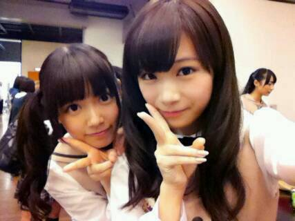
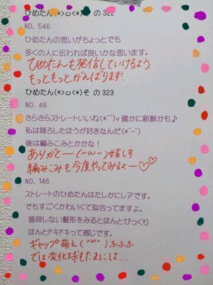

| 2013/11 09 Sat | ひめたん(*>ω<*)そ の366 |
今日はとある撮影がありました∩^^∩わーい

露骨すぎる加工......
こーゆーときセンス問われるのかな←
とっとにかくっ
ゆるふわーな感じ、ナチュラルな感じにしたくて
くるくるツインは今回は封印です。
あんま普段みたことないような表情で
たくさん撮っていただきました！
楽しみにしててねー


真夏さんブログに
ひめたんいっぱーいでてきた＼(^O^)／んぱ

真夏さん (秋元真夏ちゃん)とね
最近さらーに仲良くなったのー
日芽「ひめたんびーむ♪♪」
真夏「ばきゅーん♪♪」
陽菜「は？」
これがお決まりなのー！
真夏とねーいろんなこと話すんだよー
ひめたんは学校もあるから
大変だなーってなってへこたれてることが
よくあるんだけど
そんなとき彼女が慰めてくれます(´;ω;｀)
この前も気がついたら１時間とか
話し込んでたみたいー♪
真夏とだと結構素直になんでも話しちゃう。
これからも仲良くしてね(〃ω〃)/
ホットドリンクが美味しい季節
今週のマイブームは生姜入りのもの。
ジンジャーミルクティ、
ジンジャーはちみつのど飴......
カラダがあったまるような
気がするでしょ？ねっ
質問返しのアイコン変えてみたよー！

 ひめたんは枕が変わっても普通に寝れる？
ひめたんは枕が変わっても普通に寝れる？
最近は枕が変わろうとお布団がなかろうと
どんな環境でも寝れるように
なってきた(´・ω・｀)
好きなふりかけは？？？
のりたま！のりたま！
まんじゅうとケーキあったらどっちとる？？
うちは断然ケーキ派
ひめたんもケーキ派っ
お誕生日はおまんじゅうより
ケーキでお祝いしたい派(〃ω〃)
もう今年も3ヶ月切ったけど
これゎやらなきゃってことある？
やり忘れたこととかある？
今年 映画館で映画みてなーい！
BAD BOYS J は
ミニシアターで観せていただいたけど
映画館全然行ってないなあ
何かオススメの映画はありますかー？
できれば...今期とゆーか...今年中......
もし乃木坂ドラフトがあって
ひめたんが指名する立場だったら
誰を1位指名する？
悩むなー
乃木坂でドラフトするのは難しいねー
いくちゃんとかるんるんとかが同じチームなら
心強いかなー♪
ひめたんは抱き枕派？普通の枕派？
それとも何もなし派？
枕があったら使いたいけど
なくても寝れちゃう。
抱き枕はねー好きなんだけどね
朝起きたらお部屋の隅っこにいます←
宮島口駅の名物のあなごめし弁当
食べた事ありますか？
ないないのです(ヾノ・ω・`)ないない
あなごさんがなんとなく好きになれないの。
部屋真っ暗にして寝る派？
それとも小さい電気付ける派？
豆電球は必須！
真っ暗だと怖いよねー！
ひめたんは、朝起きて１番に何をする？
なんだろうなー
伸びるかな。のびーって＼(^O^)／
それでポキポキって鳴ったら１日がんばれるかな
ひめたんは
最近良く聴くアーティストは誰ですか？
田村ゆかりさん
遅ばせながらハマってます
かわいらしいなあ......きゅんきゅんしちゃう。
ひめたんは朝髪型みすったらどうする？
いつもキレイにできないよ( ∀ )
でも時間ギリギリだーってことが多いので
割とそのまんまだったりする←

いつもコメントありがとうございます
おとこのこ「きゅんきゅんしたー」
おにゃーのこ「ひめたんみたいになりたいー」
とか最近よく見かけます(´;ω;｀)嬉しす
おさげ好評でほっとしました！
BUBKAチェックするよーって方ありがとう！
明日は乃木どこ、あさってはMJ収録
よろしくお願いします。
さーてー明日は何をしようかな♪
(＊´・ω・＊)
コメント(409)
2013/11/09 23:36